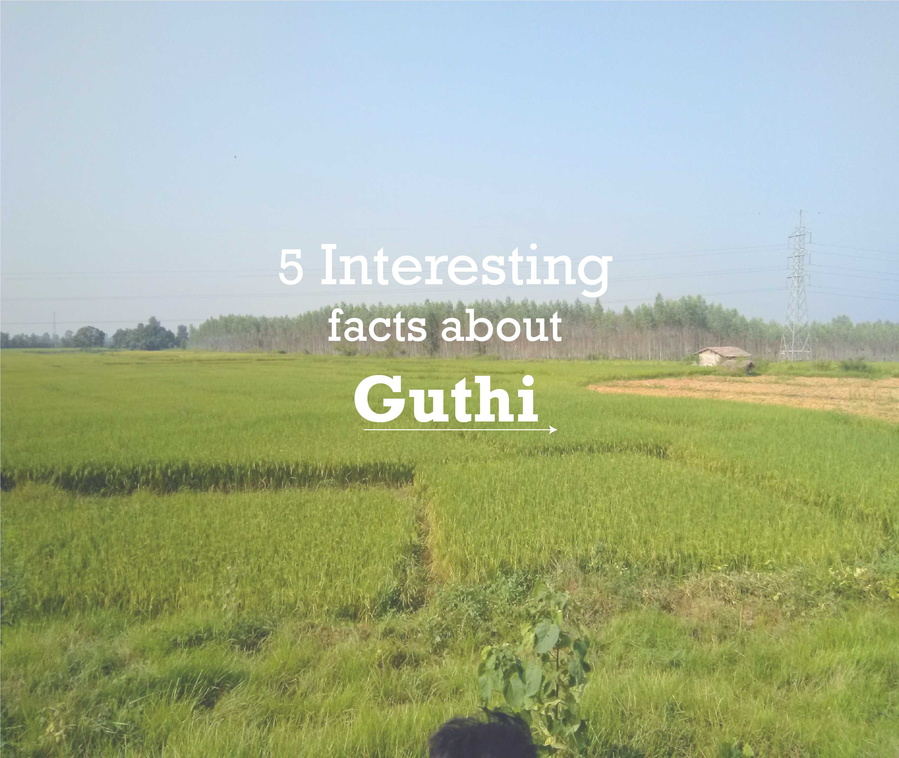

Interesting facts about guthi
Guthi is age old practice in nepal and here are some facts about this tradition
More blogs here
Guthi is age old practice in nepal and here are some facts about this tradition
More blogs here